故纸堆 · 岁时记 · 京辇春熙图册
清 · 黄钺 恭绘
嘉庆岁时，帝都风物裱糊下的江山

九曲灯棚 · 《京辇春熙图》第六开
嘉庆年间，宫廷画家黄钺奉旨把京城内外的正月风俗画成十二开册页，两位皇子逐开题诗。画中全是正月玩法：猜灯谜、放鞭炮、捉迷藏、逛庙会，还有一座占地两亩、进去能绕晕的"九曲黄河"灯棚。而这幅画意涵引经据典、层层叠叠，也能把人绕晕。
木鸟杂记 岁时记
背景 · 一件皇家"命题作文"
皇帝欲装裱"太平盛世"，大臣献上一本年画
黄钺，字左田，安徽当涂人，乾隆五十五年进士，他工诗文书画，与董邦达齐名，时称"董黄"。这本册子是奉旨之作，主题照例是为"盛世装裱"。但他并非传统宫廷画家，而是官至户部尚书、军机大臣的重臣。
黄钺著有《二十四画品》，推崇"气韵""荒寒""清旷""空灵"等文人山水境界，主张"意居笔先，妙在画外"。但《京辇春熙图》却是工丽细密、叙事性极强的风俗画，与其画论追求的"荒寒""淡逸"截然相反，其间反差，可堪玩味。
更有反差的是，当时正值嘉庆朝"白莲教起义、天理教之变、官场疲玩"的不断内乱中。
十二开里，前六开由皇子绵宁（后来的道光帝）题诗，后六开由皇子绵恺题诗。
更有反差的是，当时正值嘉庆朝"白莲教起义、天理教之变、官场疲玩"的不断内乱中。
十二开里，前六开由皇子绵宁（后来的道光帝）题诗，后六开由皇子绵恺题诗。
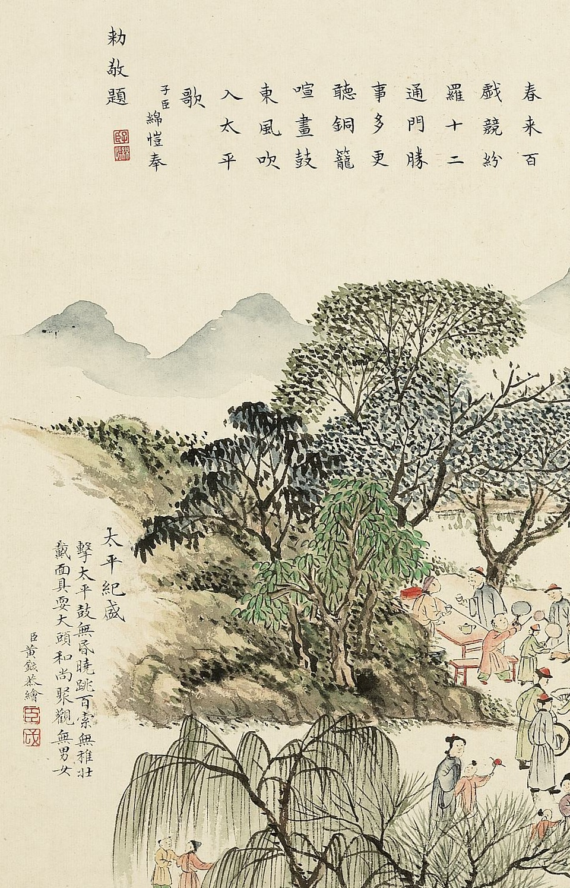
《京辇春熙图》册 · 纸本设色 · 主画约 25x32.1 厘米
木鸟杂记 岁时记
第一开 · 春幡剪彩
过年的仪式感，从头饰开始
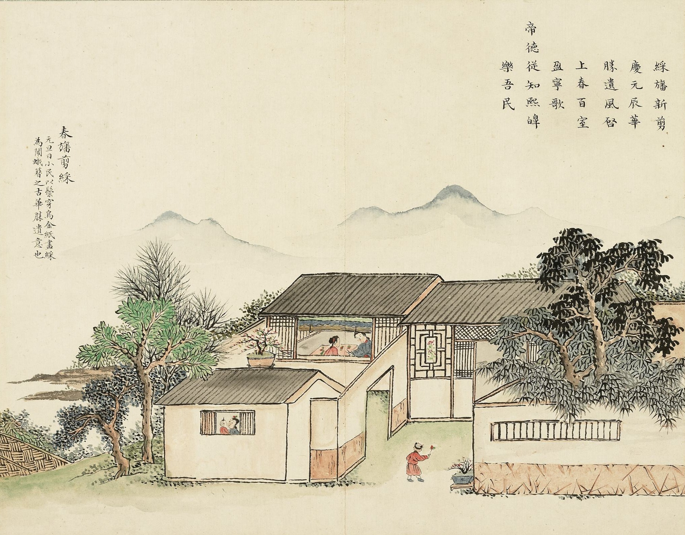
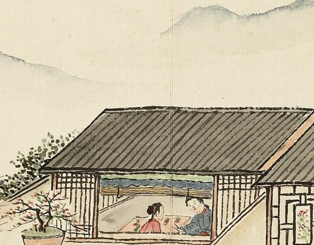
上：第一开全幅 · 下：窗前剪彩（局部放大）
「元旦日，小民以鬃穿乌金纸画彩，为闹蛾簪之。」马鬃穿上乌金纸剪的彩花，做成闹蛾簪戴在头上，是宋朝传下来的"华胜"遗风。当时也叫"闹嚷嚷"。
这套册页不仅是一部风俗画，更是一部"头上开花"的物质文化史终端记录——因为此后不久，这些习俗就随着时代剧变而消亡了。
这套册页不仅是一部风俗画，更是一部"头上开花"的物质文化史终端记录——因为此后不久，这些习俗就随着时代剧变而消亡了。
木鸟杂记 岁时记
第二开 · 萧寺商灯
寺庙墙上的"有奖竞猜"
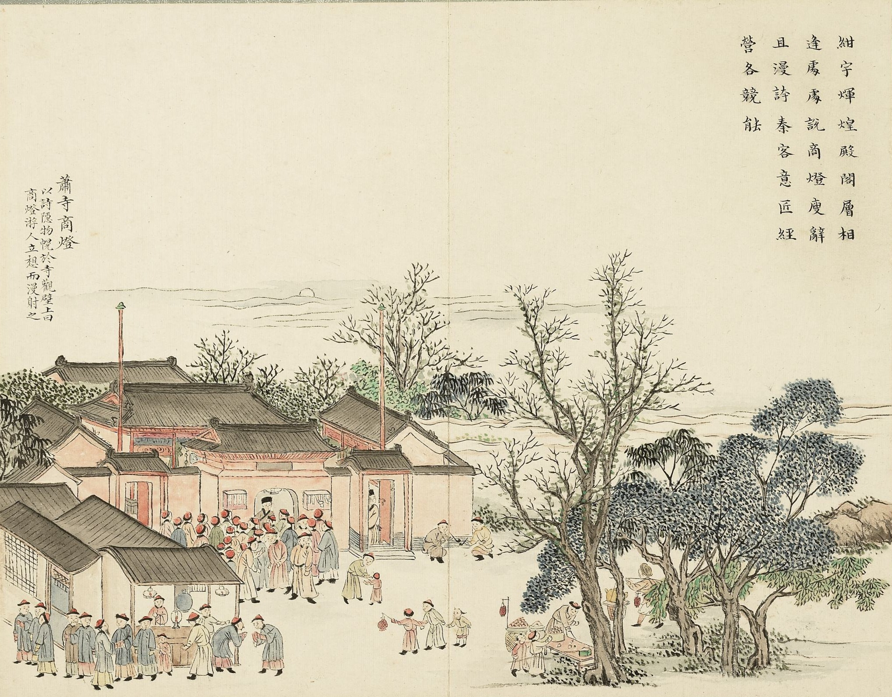
寺门前聚满猜谜的游人 · 第二开
「以诗隐物，幌于寺观壁上，曰商灯。游人立想而漫射之。」谜面写成诗，挂上寺观的墙，游人站着琢磨，想到了就随口一"射"。商灯就是猜灯谜，"商"是揣摩商量的意思。画里有领着孩子的，有见面作揖的，都是来猜的。
小注：满幅的红顶黑檐帽叫暖帽，清代冬天男子的标配；那点红只是绒帽结，不是官帽的顶戴。
「绀宇辉皇殿阁层，相逢处处说商灯。」——绵宁题
木鸟杂记 岁时记
第三开 · 吉爆占丰
放鞭炮，也要赛一赛
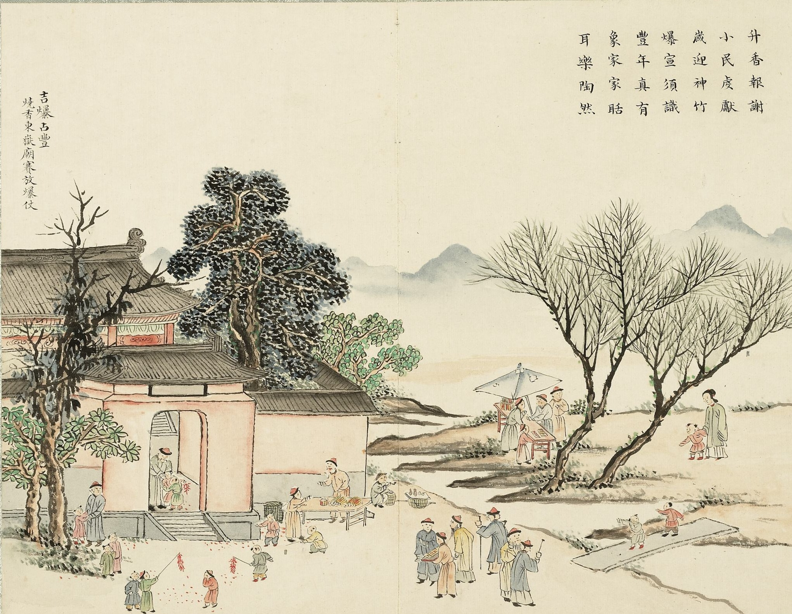
东岳庙前，赛放爆仗 · 第三开
「烧香东岳庙，赛放爆仗。」烧完香，各家比赛放爆竹：谁家的响、谁家的密，谁家一年旺。题诗说"须识丰年真有象，家家聒耳乐陶然"，要的就是这份人间烟火。画里庙门边支着爆仗摊，几个孩子挑着成串的爆仗满地跑。
小注：东岳庙今天还在，位于朝阳门外大街，The Box 旁边，那个琉璃牌坊很显眼。元代始建，现为北京民俗博物馆。东岳庙会于1999年恢复举办，此后每年春节期间（农历大年初一至初五）都会举行，是国家级非物质文化遗产。
木鸟杂记 岁时记
第四开 · 天灯照瑞
一挂一个月的"氛围灯"
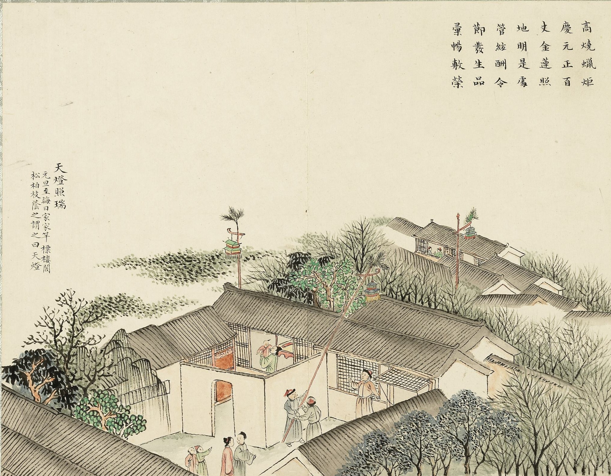
屋顶高耸的灯竿即是天灯 · 第四开
「元旦至晦日，家家竿标楼阁，松柏枝荫之，谓之曰天灯。」门口立高竿，竿顶点灯，松柏枝围一圈，从初一点到三十，家家户户统一亮灯。这个习俗现在我河北老家还有，自除夕开始贴对联，挂灯笼。后面年味淡了，就变成了每家"大门筒"前留一盏电灯。
木鸟杂记 岁时记
第五开 · 群婴杂戏
清朝的捉迷藏，你们玩过吗
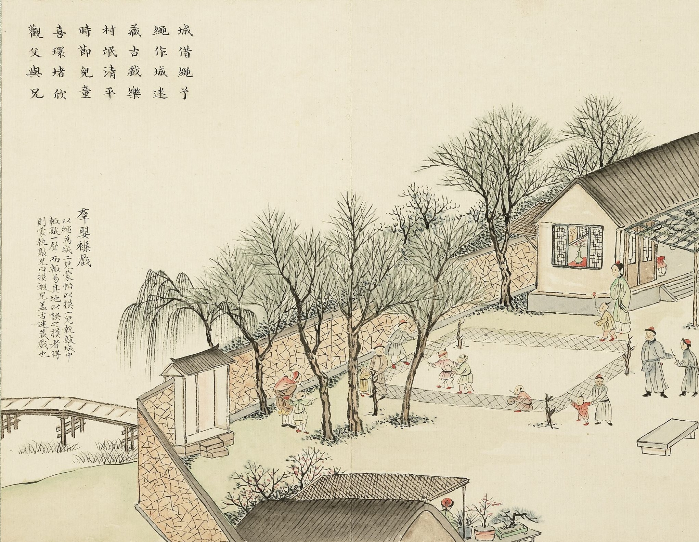
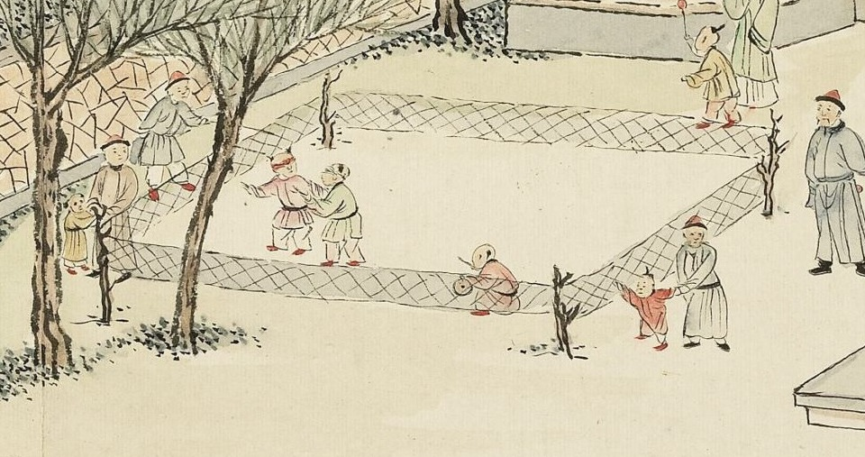
上：第五开全幅 · 下：摸虾儿（局部放大）
「以绳为城。二儿蒙帕以摸，一儿执敲城中，辄敲一声而辄易其地以误之。摸者得，则蒙执敲儿。曰摸虾儿。」绳子圈一座"城"，两人蒙眼摸，一人敲一声挪个地方；摸到了，换被摸的去敲。
说白了就是捉迷藏，但我们那捉迷藏和这不大相同，是迷眼倒数，指定范围，各人藏好，一个个去捉。
说白了就是捉迷藏，但我们那捉迷藏和这不大相同，是迷眼倒数，指定范围，各人藏好，一个个去捉。
木鸟杂记 岁时记
第六开 · 九曲灯棚
两亩地的"灯笼阵"，迷尽人眼
临水的九曲灯棚 · 第六开
「乡村人缚秣秸作棚，周悬杂灯，地广二亩，门径曲黠，藏三四里。误入者，即迷不出。曰黄河九曲灯。」秫秸扎棚两亩大，路径曲里拐弯藏了三四里，挂满彩灯，走错一步就绕不出来，是元宵前后的顶流。
小注：这灯阵一直没断：北京密云、怀柔的村里元宵还摆"九曲黄河阵灯"，2008 年列入国家级非遗。
「仿佛黄河九曲行，珠灯点点灿星明。……疑是人间不夜城。」——绵宁题
木鸟杂记 岁时记
第七开 · 货郎春市
古人过年去哪儿逛：琉璃厂，白塔寺
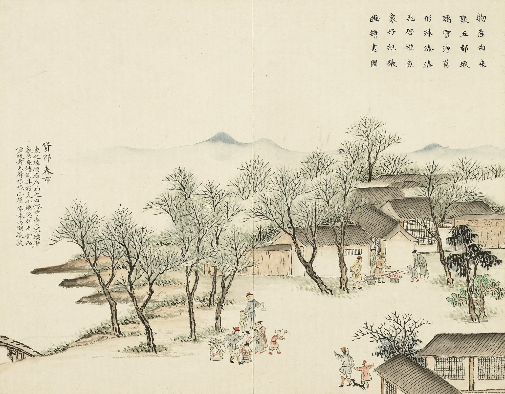
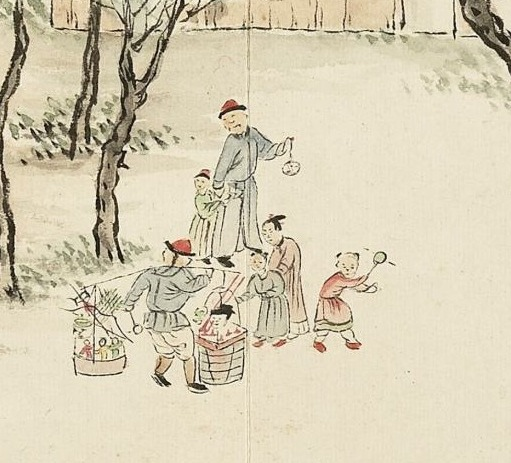
上：第七开全幅 · 下：货郎担（局部放大）
「东之琉璃厂店，西之白塔寺。」正月两大商圈。「琉璃瓶，盛朱鱼，转侧其影，大小俄忽」，琉璃瓶养红金鱼，光影流转，鱼忽大忽小。还有种叫"倒掖气"的琉璃玩具，衔在嘴里吹吸，「大声轰轰，小声唪唪」。给孩子听个响儿，二百年前就是如此。
小注：琉璃厂在杨梅竹斜街的尽头，从清初起就是书肆文玩街，现在还是，虽然有点门庭冷落；白塔寺即妙应寺白塔，元至元年间尼泊尔工匠阿尼哥主持建造，最近常有"白塔寺之夜"类的文化活动。
木鸟杂记 岁时记
第八开 · 击壤遗风
一款玩了四千年的游戏
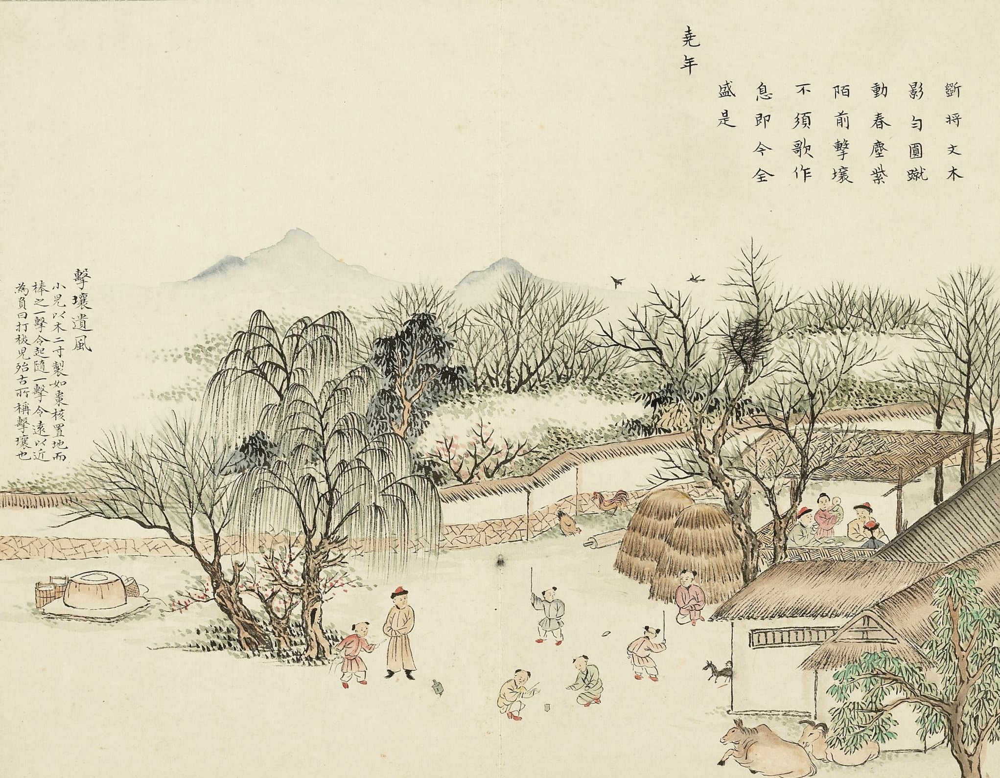
打柭儿的小儿 · 第八开
「小儿以木二寸制如枣核，置地而棒之，一击令起，随一击令远，以近为负。曰打柭儿。」将二寸小木削成枣核，先打起来，再趁势击远，近的算输。
绵恺题："击壤不须歌作息，即今全盛是尧年。"这马屁拍得，都不装了。但此打柭非上古时的击壤，黄钺只是借用这个意象，来表达"民间自足的象征"，进而呈现"盛世祥瑞的道具"。
绵恺题："击壤不须歌作息，即今全盛是尧年。"这马屁拍得，都不装了。但此打柭非上古时的击壤，黄钺只是借用这个意象，来表达"民间自足的象征"，进而呈现"盛世祥瑞的道具"。
木鸟杂记 岁时记
第九开 · 掷丸斗胜
抓子儿，清朝的姑娘们就在玩
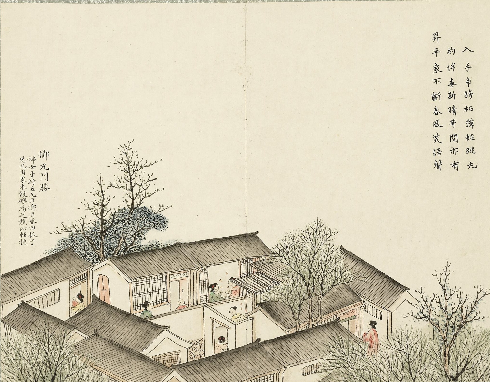
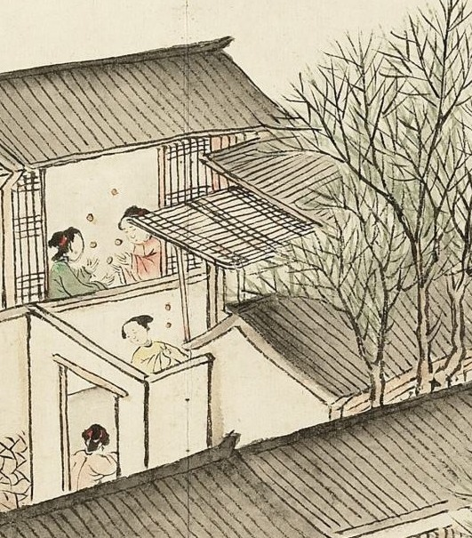
上：第九开全幅 · 下：掷丸（局部放大）
「妇女手持五丸，且掷且承，曰抓子儿。丸用象木银砾为之，竞以轻捷。」五个丸子抛起来接住，象牙、木头、银砾都行，拼的是手快。八零九零后小时候玩的抓石子，往前能一直追到这一开。
木鸟杂记 岁时记
第十开 · 踏月征祥
正月十六，妇女们的"专场夜游"
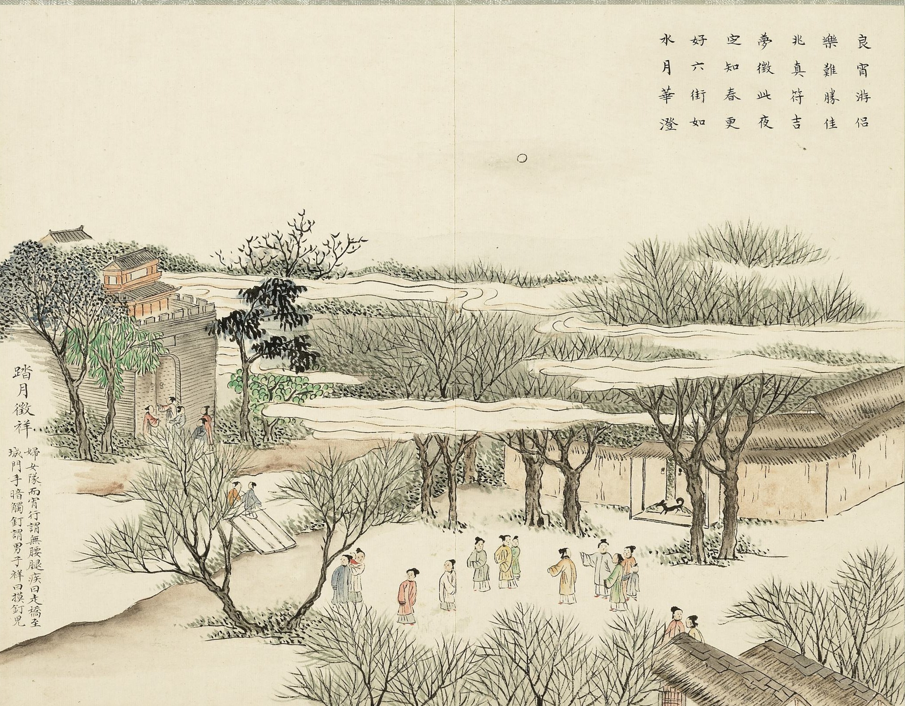
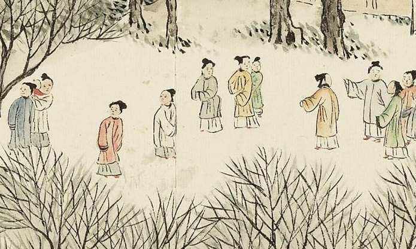
上：第十开全幅 · 下：走桥的女眷（局部放大）
「妇女队而宵行，谓无腰腿疾，曰走桥。至城门，手暗触钉，谓男子祥，曰摸钉儿。」走过桥，一年不腰腿疼；摸过城门钉，讨个"添丁"的彩头（钉、丁同音）。平日大门不出的女眷，这一晚可以理直气壮地夜游，是正月里难得的、她们的主场。
小注：摸钉去的是正阳门，就是今天的前门一带。城楼还在，现在哪儿的门钉都摸不着了，只能隔着护栏看看。
木鸟杂记 岁时记
十一开 · 燕九嬉春
丘处机的生日，全京城给他过
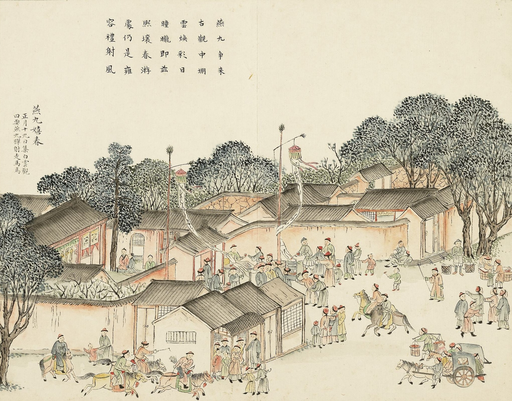
白云观前人马喧腾 · 十一开
「正月十九日，集白云观，曰耍燕九。」所谓燕九，谐音宴丘，给丘处机过生日。正月十九是丘处机诞辰，对，就是《射雕》里那位长春子。这一天全北京涌向白云观，弹的弹、射的射、跑马看会。武侠迷穿越回去，记得正月十九去白云观蹲点。为什么呢？据说丘处机死后成仙，每年正月十八夜里到十九凌晨，会化身各种形象回到白云观。谁有幸"偶遇"这位神仙，就能祛病延年。
元宵节过了，灯也灭了，春节似乎该结束了——不，还剩一个燕九节。在清代北京人的时间感知里，正月十九才是真正的"年封口"，过完这一天，春节才算正式落幕。
元宵节过了，灯也灭了，春节似乎该结束了——不，还剩一个燕九节。在清代北京人的时间感知里，正月十九才是真正的"年封口"，过完这一天，春节才算正式落幕。
小注：白云观在今西便门外，全真龙门派祖庭；正月十九的庙会一直办到现在，摸石猴、打金钱眼还是保留项目。
木鸟杂记 岁时记
十二开 · 太平纪盛
正月的最后一闹
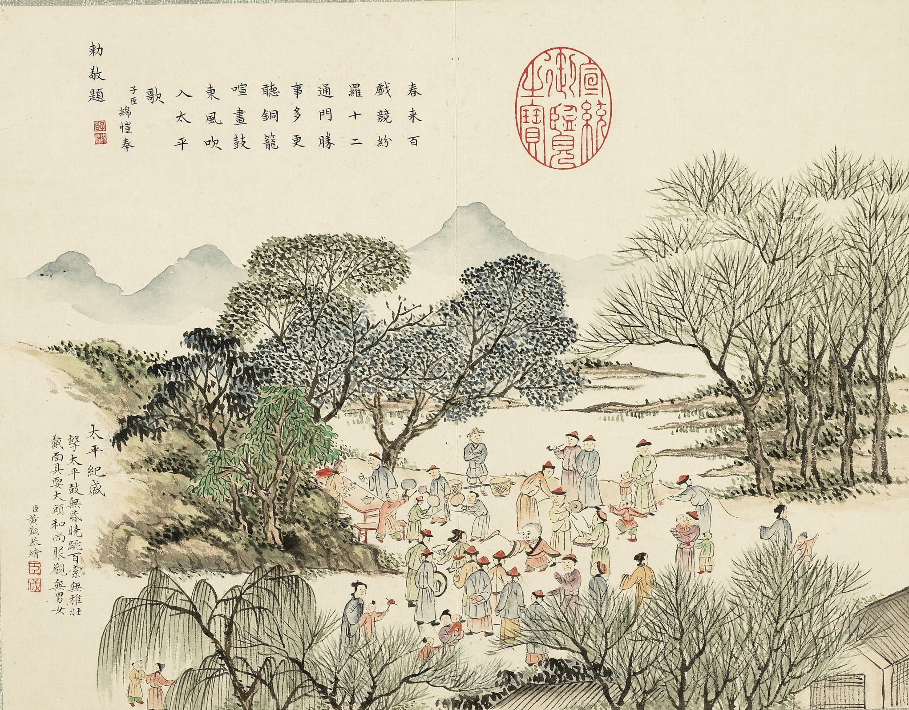
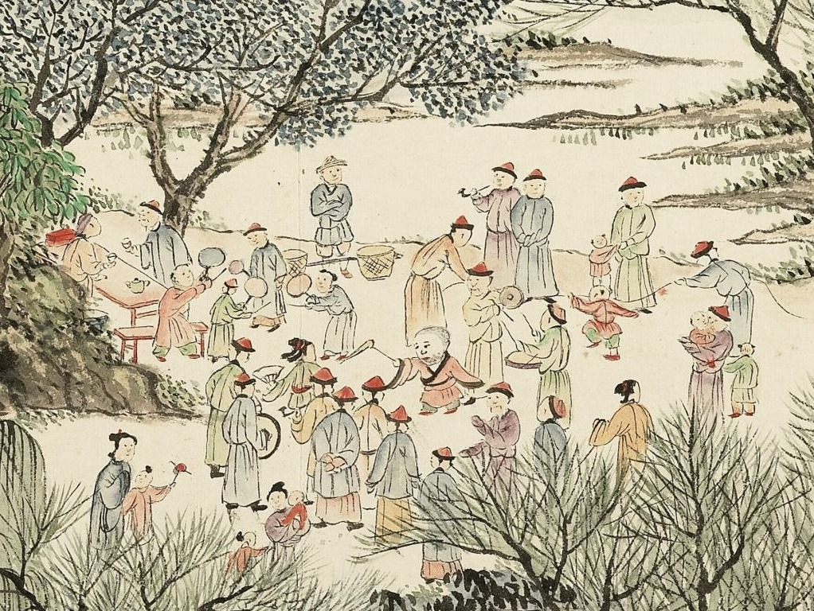
上：十二开全幅 · 下：太平鼓与面具（局部放大）
「击太平鼓无昏晓，跳百索无稚壮，戴面具耍大头和尚，聚观无男女。」太平鼓从早敲到晚，跳大绳不分老小，大头面具一戴就扭起来，围观的不分男女。
这其实是一场虚构的"大合欢"，忘记了时间、不在意老少、又无分男女，在这盛世中舞吧、跳吧！很像一场电影的蒙太奇，但背景色却是此起彼伏的民变。
说来嘉庆帝最不喜人通过祥瑞粉饰太平，但被白莲教搞得焦头烂额的他，也需要最"清高"的大臣来给点太平的心理暗示，实在令人唏嘘。
这其实是一场虚构的"大合欢"，忘记了时间、不在意老少、又无分男女，在这盛世中舞吧、跳吧！很像一场电影的蒙太奇，但背景色却是此起彼伏的民变。
说来嘉庆帝最不喜人通过祥瑞粉饰太平，但被白莲教搞得焦头烂额的他，也需要最"清高"的大臣来给点太平的心理暗示，实在令人唏嘘。
木鸟杂记 岁时记
尾页 · 画册之外
给皇帝献的"太平"，给后人留的热闹
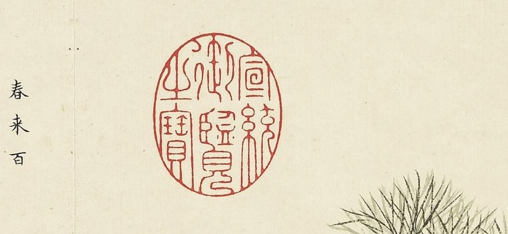
「宣统御览之宝」与绵恺题诗 · 十二开（局部）
故宫研究人员指出，很多钤有"宣统御览之宝"的作品，溥仪本人"大概并没有接触过"——这枚印已经沦为盗运文物的"手续章"，它意味着此册在1922—1923年间曾被溥仪"清点"过，极有可能经历了"赏溥杰"的盗运流程。
往昔危机和繁华都淡去，我们后人在玩味这幅画时，反而可以静静欣赏下画最表面的那一层——年年岁时，风华意趣。
往昔危机和繁华都淡去，我们后人在玩味这幅画时，反而可以静静欣赏下画最表面的那一层——年年岁时，风华意趣。
小注：画看不过瘾的，接着翻张江裁的《北平岁时志》——1936 年北平研究院印行，十二卷，按月辑录北京一年的节令风俗。灯棚、摸钉、白云观会神仙，画里这些玩法，书里都有文字对得上。
木鸟杂记 岁时记